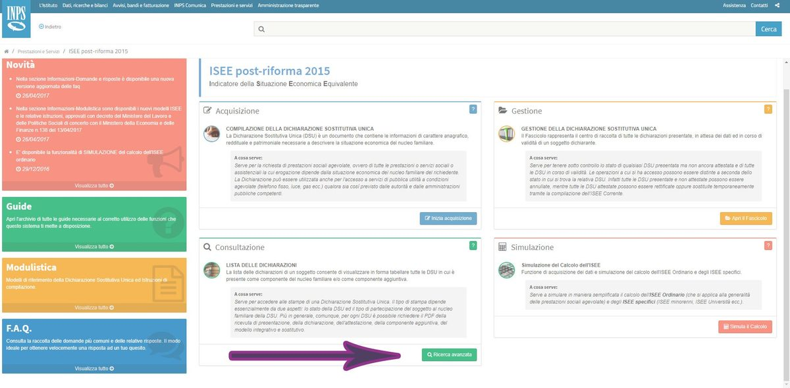
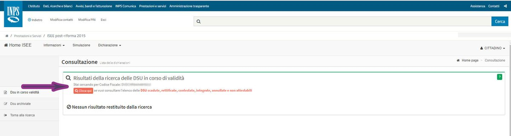

#CONSIGLI👥
⬆️📌 L’attestazione ISEE viene emessa dall’INPS qualche giorno dopo aver inoltrato la DSU. Se l’utente è in possesso delle credenziali di accesso, può scaricarla dal sito INPS, anche se ha presentato la DSU attraverso un intermediario.
🔷 L’attestazione ISEE è un documento rilasciato dall’INPS che attesta la validità della DSU (Dichiarazione Sostitutiva Unica), ovvero l’autodichiarazione delle informazioni di carattere anagrafico, reddituale e patrimoniale necessarie ad individuare la situazione economica del nucleo familiare per la richiesta di prestazioni sociali, e scade ogni 31 Dicembre.
🔷 Se l’utente non si è imbarcato nella compilazione della DSU in autonomia, ma si è affidato invece ad un CAF o un intermediario, può comunque scaricare l’attestazione attraverso il sito dell’INPS, l’importante è essere in possesso delle credenziali di accesso SPID/CNS/CIE.
🔷 Per scaricare l’attestazione ISEE dal sito INPS bisogna seguire i seguenti passaggi:
- https://servizi2.inps.it/servizi/Iseeriforma/home.aspx
- Nella HOME ISEE cliccare sulla voce RICERCA AVANZATA nel riquadro ed accedere con le proprie CREDENZIALI

- La pagina successiva vi permette di effettuare la ricerca attraverso il codice fiscale o attraverso il numero di protocollo (INPSISEE2017…….-00). Cliccate su Avvia Ricerca.
- Potrete quindi consultare le DSU in corso di validità, ovvero quelle non scadute e attestate correttamente dall’INPS. Se invece avete necessità di scaricare l’attestazione di DSU scadute, rettificate, contestate, integrate, annullate e non attestabili cliccate sul tasto arancione.

🔷 Seguendo questo percorso l’utente potrà scaricare l’attestazione per tutti i tipi di ISEE:
- ISEE MINORENNI - L’ISEE Minorenni si applica alle prestazioni agevolate rivolte ai minorenni o a famiglie con minorenni
- ISEE UNIVERSITÀ - L’ISEE Università si applica alle prestazioni agevolate per il diritto allo studio universitario
- ISEE SOCIO SANITARIO E ISEE DOTTORATO DI RICERCA: L’ISEE Socio sanitario e corsi di dottorato si applica a prestazioni socio sanitarie non residenziali a favore di persone maggiorenni, ad esempio assistenza domiciliare per le persone con disabilità e/o non autosufficienti corsi di dottorato di ricerca
- ISEE SOCIO SANITARIO RESIDENZE - L’ISEE Socio sanitario residenze si applica alle prestazioni residenziali a favore di persone maggiorenni (ricoveri presso residenze socio-sanitarie assistenziali – RSA, RSSA, residenze protette)
Se lo desideri, iscriviti ai mie canali social per restare aggiornato ⬇️
Social MediaInoltre se hai trovato utile ed interessante questo articolo, non esitare a condividerlo, a lasciare un tuo mi piace 👍, o seguire la mia pagina Facebook, per sostenermi e continuare ad informare. Grazie anticipatamente a chi vorrà farlo.